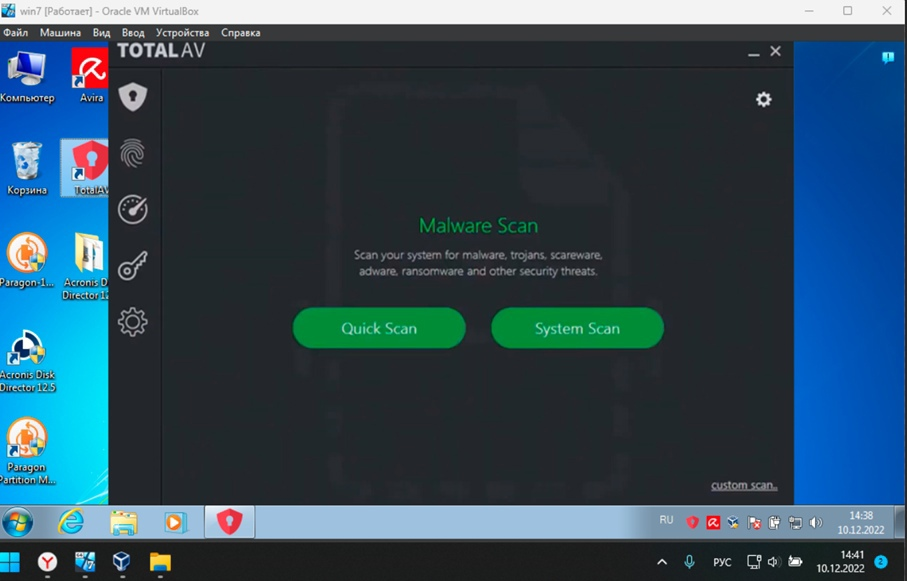

Total AV Remote Firewall
Total AV Remote Firewall (рис. 20) – это антивирусная технология основана на технологии популярной программы Avira. Также существует сотрудничество с провайдером VPN Windscribe. Таким образом, Total AV удалось объединить лучшие и наиболее важные функции многих проверенных провайдеров и создать непревзойденное предложение.
